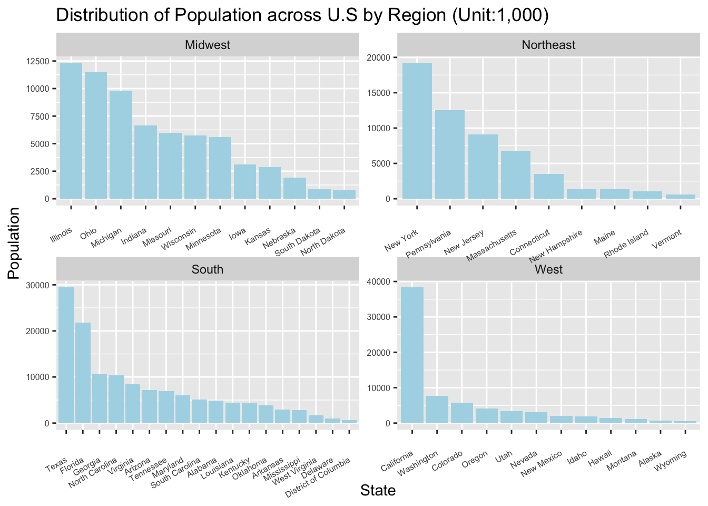
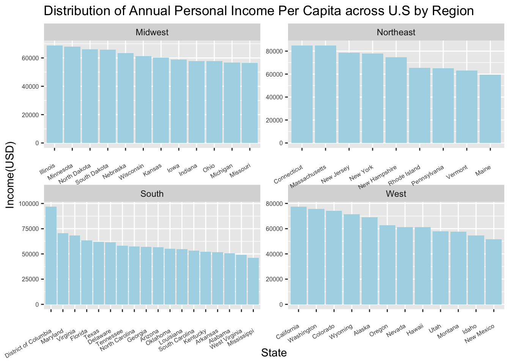
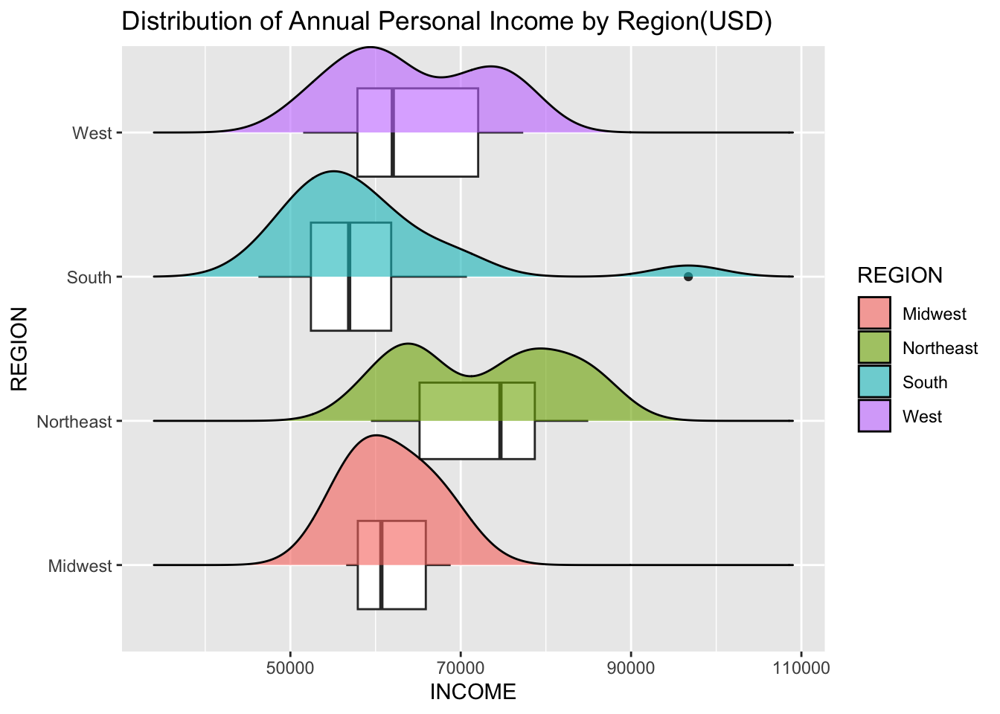
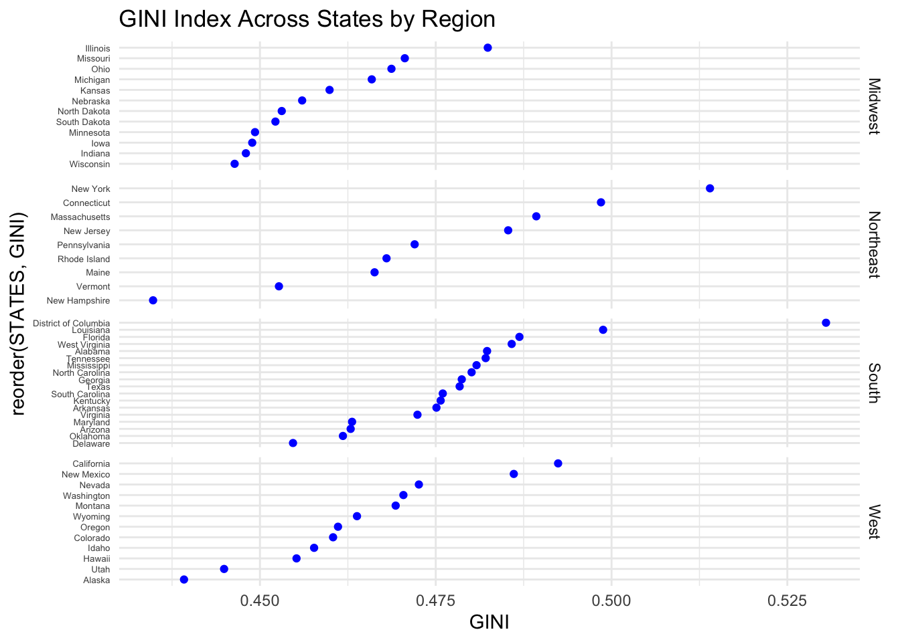
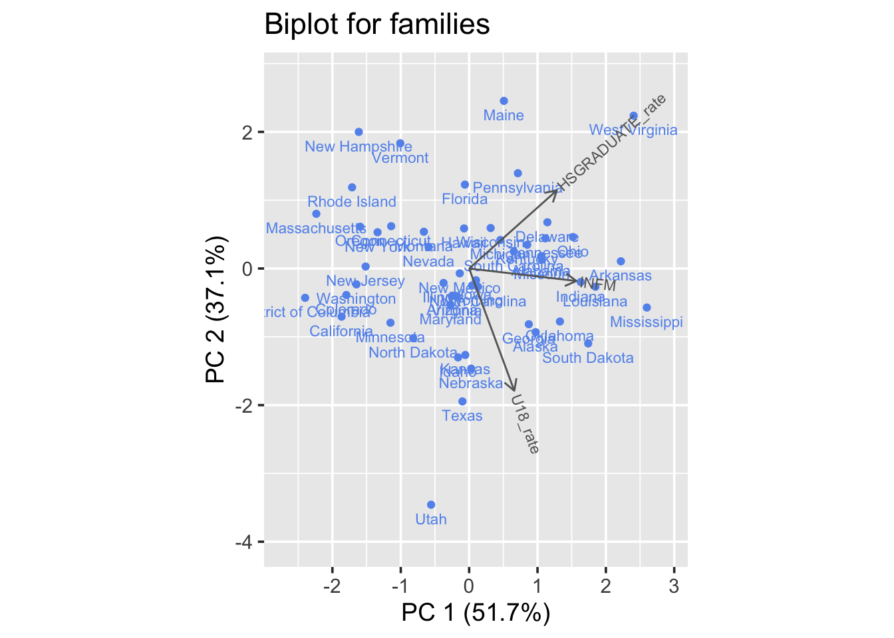
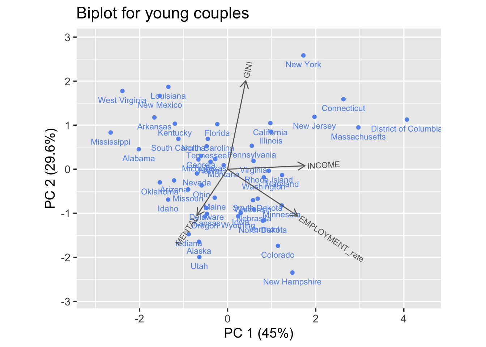

ggplot(states, aes(x=reorder(STATES,desc(POPULATION/1000)),y=POPULATION/1000))+geom_col(fill ="lightblue")+facet_wrap(~REGION, scales ="free")+labs(x ="State", y="Population",title ="Distribution of Population across U.S by Region (Unit:1,000)")+theme(axis.text.y =element_text(size =6))+theme(axis.text.x =element_text(size =6, angle =30, vjust =0.5, hjust =1))

This is an overview of population distribution across different regions of the United States, with each subgraph representing one of the four major regions: Midwest, Northeast, South, and West. The y-axis of each graph shows the population in thousands. We can see that the South and West regions show states with very high populations, suggesting these regions have certain attractions, possibly including warmer climates, growing economies, or industry presence such technology.There are also some states have significantly higher populations than others within the same region, which can be considered as an indication for of active economic environment or desirable living conditions. For example, California in the West and Texas and Florida in the South ranking the first within their regions, with the population of close to 40,000 thousands and over 20,000 thousands. States with fewer people living in them often depend more on farming or using things from nature, like minerals and forests, for their money. They usually don’t have big cities, and some can be hard to get to because of where they are on the map, like Alaska and Wyoming. This can also suit to the preference of certain group of population when consider moving around the states.
Graph2: Demographic Overview Across the States
Code
# Reshape the data from wide to longstates_long <- states %>%pivot_longer(cols =c(U18, OVER60), names_to ="Age_Group", values_to ="Population")# Plot the dataggplot(states_long, aes(x =reorder(STATES,Population), y = Population/1000, fill = Age_Group)) +geom_col(position ="dodge", width =0.8) +labs(title ="Teenage and Senior Distribution across U.S By Region (Unit:1,000)",y ="Population",x ="States",fill ="Age_Group") +theme_minimal() +theme(axis.text.y =element_text(size =6)) +coord_flip()+facet_wrap(~ REGION, scales ="free_y")

The above set of bar graphs represent the distribution of two age groups, teenagers (people with age under 18, shown in blue) and seniors (people with age over 60, shown in red), across U.S. states within four regions, in the unit of thousands. In general, a larger proportion of teenagers suggests a large potential in robust population growth, the work force growth, abundant educational and job opporunities. Whereas a larger proportion of seniors suggest that these places might be popular for retirement, and they may have a bigger need for healthcare services and retirement homes. The balance between two groups is also very important, in terms of whether the population pyramid is stable so that the challenges of supporting the seniors wound’t arise. From the graph, we can identify a genereal trend of relative prominance in the senior population,for which is more notable in the northeast region, indicating a preferable environment for elders and for possible historical reasons. The states with most substaintial teenage population is texas, and states with the most substaintial senior population is florida. The high in teenage population might be due to higher birth rates, migration of younger families, or both. The significant number of seniors in Florida is consistent with its reputation as a retirement destination due to its warm climate and tax-friendly policies for retirees. In the Midwest region, the states has a relatively balanced the populations of teenagers and seniors, suggesting a stable demographic.This can be a result from lacking of both incoming and outgoing population due to family-oriented cultrual tradition in Midwest.This can be considered somewhat less prefereable enviornment for movers in terms of lack of fluidty and diversity in population and hence social classes, but the stability can be good for those who wants to settle down in a place for long term.
Graph3: Income Distribution By Region
Code
ggplot(states, aes(x = INCOME, y = REGION)) +geom_boxplot(varwidth =TRUE) +geom_density_ridges(aes(fill = REGION), scale =0.9, alpha =0.6) +labs(title ="Distribution of Annual Personal Income by Region(USD)")
Picking joint bandwidth of 4090

Graph4: Income Distribution By Region
Code
ggplot(states, aes(x=reorder(STATES,desc(INCOME)),y=INCOME))+geom_col(fill ="lightblue")+facet_wrap(~REGION, scales ="free")+labs(x ="State", y="Income(USD)",title ="Distribution of Annual Personal Income Per Capita across U.S by Region")+theme(axis.text.y =element_text(size =6))+theme(axis.text.x =element_text(size =6, angle =30, vjust =0.5, hjust =1))
Graph 3 and 4 combined to be the overview of Annual personal income distribution by region. The personal income is considered as a straight forward indication for the economic well-being and financial prosperity of the local communities. From the boxplot, we can see that the northeast region has the highest 75% percentile, median, and 25% percential among all the regions, where the south region has the lowest for all. By the graph we can see that Illinois, Connecticut, D.C and California are the top states with highest perosnal income in four regions. This supports their popularity and attratciveness in our common knowledge. Higher personal income means better career opportunites, safety level, and normally better public facilities, which make them attrative for the potential movers. The West and Norteast region tends to have larger spread than the South and Midwest Region, this can be consider as a higher divide in income inequality,and the bimodal pattern in the distribution also indicate this point, where there is a large group with the lower than the median income and a large group of people with higher than median income. THis, however, can also be an indication for the dynamic in different opporunties. This is consistent with our common knwoledge, where the west is considered to be a tech hub and the northeast is considered to be the financial hub. These are the two highest paying industry in the U.S and such that result in a higher annual personal income in these region, which means more job opportuinies and a better career development path. The smallest variability of income in the Midwest region correspond to the high stability in the population structure as suggested in the graph 2, suggesting a lack of fluid in population and derrivatively the social class structures. However, it is also a good sign for lower income ineuqality, makes it advantagous for those who yearn stability and less motivated to take upon challenges. The outlier in the South is the District of Columbia, it has a over 95,000 USD annual personal income per capita that is way exceed the median in the south that is around 58,000 USD.
Graph5: GINI Index across states
Code
ggplot(states, aes(x = GINI, y =reorder(STATES, GINI))) +geom_dotplot(binaxis ="y", stackdir ="center", dotsize =0.5, binwidth =0.2) +facet_wrap(~REGION, scales ="free_y", ncol =1, labeller =labeller(REGION =label_wrap_gen(15)), strip.position ="right") +geom_point(color ="blue")+ggtitle("GINI Index Across States by Region") +theme_minimal() +theme(axis.text.y =element_text(size =5))

This graph depicts the Gini index scores across the United States. The Gini index is a statistical measure used to quantify income inequality within a population. It ranges from 0 to 1, where 0 represents perfect income equality (everyone has the same income) and 1 represents perfect income inequality (one person has all the income). This graph reveals several notable patterns and insights. Firstly, there is a noticeable regional pattern, with states in the Midwest consistently exhibiting lower Gini index scores that clusterd around the range 0.45 to 0.475, indicative of less income inequality, compared to states in the South that clustered around 0.475 to 0.485, which tend to have higher scores, signifying greater income inequality. The Northeast and West regions have a wider spread, indicating the disparaties between the states winthin region. Illinios, New York, DC, and California are the states with highest GINI index across four regions, whereas Wisconsin, New Hampshire, Delaware and Alaska has the lowest. Combining with the information we got from graph 3 and 4, it can shown a trade-off between higher income and GINI Index.
Two notable outliers in the data include D.C and New Hampshire, repectively with the highest GINI Index above 0.525 and the lowest Gini index scorebelow 0.425. The pronounced income disparity in D.C is consistent with the expected trade off between euality and high-paying, however the euitable economic situation in New Hampshire doesn’t come with the lowest income. This makes it very ideal for those who wants both equality and dynamic career opportunites.
For the two mosaic plots below, we converted the poverty, obese, mental, and crime columns into columns with four categorical levels: VLOW, LOW, MOD, and HIGH. Where VLOW correspond to the data that are lower than the Minimum, LOW correspond to the data points that are between Minimum and the 25% percentile, MOD correspond to the data points that are between 25% percentile and median, HIGH correspond to the data points that are above 75% percentile.
The graph compares regions on the basis of obesity levels and poverty levels. The obesity and poverty levels are categorized as VLOW (Very Low), LOW, MOD (Moderate), and HIGH. Each region has a separate bar, with different colors representing the proportion of each obesity or poverty level within that region. Here are some notable pattern form the graph: First, the South region has the highest proportion of HIGH obesity levels compared to other regions, and the proportion of the HIGH poverty rate level is high within the this obesity level. This is definetly a negative sign for the living condition in the south, which showcase the association it has with unhealthy dieting behavior and the association with the povery rate. The association between the povery and obesity can be explained by nutrient and awareness aspect. Second,Northeast and West has a decreasing proportion of obesity level going from VLOW to HIGH, which is an indication for good health condition of people in these two regions. the high povety level didn’t occur in northeast region for the VLOW and LOW obesity levels, whereas it only occured in VLOW and MOD for the west, showing a relatively different association.
Third, the Midwest Has a rather balanced distribution of four types of obesity level, and relatively balanced distribution of poverty level within the types of obesity level, showing a stability in the overall structure.
This mosaic plot allows us to see how CRIME levels are distributed across different regions and how MENTAL levels vary within each CRIME level.Note that the HIGH level for mental health means being ranked high on the meantl illness index, and high crime level means high number of crime rate. By examining the width of segments within each CRIME level, we can understand how MENTAL levels are associated with different levels of crime in each region. Two most notable pattern shown in the graph is the high proportion of HIGH mental health issues in Midwest and VLOW mental health issues in Northeast compare to other regions. Within these two categories, we can also see the it is in association with high crime rate for high mental health issue and low crime rate for low mental health issue. This gives us information on the desirability of living condition for these two regions on the health and safety level, where Midwets can be more dangerous and less mentally helathy condusive to live in. South Region has a relatively balanced distribution across the mental health levels, with no single category overwhelmingly dominant, and it is a good sign that the high mental helth is not in strong association with high crime rate, which can imply that certian safety or support measure is in place. The West Region has higher proportion on the MOD and HIGH mental health level, showcasing the disadvantages for those who need care in mental health. The MOD and HIGH crime level is also growing with the increase in the mental health level, which follows the expected association.
Graph8: Scatterplot Matrix between the important features
This is a scatterplot matrix that shows correlation between GINI index, Obesity, Poverty rate, Crime rate, Income, mental health level, Infant Mortality Rate, High School graduation rate, and employmen rate with the given data. By the data, we can identity that there are relatively strong correlation between these two pairs of factors: Infant Mortality rate and Poverty(0.601), and Empolyment and Income(0.727). This indicates states with higher poverty rates tend to have higher infant mortality rates, states with higher employment rates tend to have higher income levels, and vice versa. This correlation makes sensebecause economic factors, such as employment rates and income levels, have a significant impact on the overall well-being of individuals and families. States with higher poverty rates often struggle to provide adequate healthcare, nutrition, and living conditions, which can result in higher infant mortality rates. Conversely, states with higher employment rates tend to have a more stable economic environment, which can lead to higher income levels and better access to healthcare, ultimately contributing to lower infant mortality rates.
Note that correlation doesn’t mean causation, but this graph can provide movers with information on what to watch out when picking states to move to, for example a location with low income can come with high infant mortality, so generally the states with higher personal income can be more prederrable for all.
Graph9: Biplot for all features
Code
draw_biplot(states_new)+ ggplot2::ggtitle("Biplot of states on different features")

In the biplot, we see a couple of outliers that lie outside of the middle cluster of states. We notice that D.C is the farthest data point out in the direction of the Income, Employment, Crime, U18, and Mental vectors. This tells us that D.C provides the most income and job security out of all other states, but it is also the most dangerous state to reside in. D.C puts forth itself as a high risk, high reward state in terms of safety and financial stability, respectively. This observation also shows that younger children are more susceptible to criminal activity in two key ways. For one, children may present as an easy target for criminals to cause harm to, which will make it more likely for criminals to take advantage of their environment. Two, children can also be heavily influence by their enviornment, thus being involved in the doing of criminal activity. Regardless of which narrative is more prevalent, more protection and influence need to be instill for the youth in D.C on how to avoid crime. These states also have the capability of providing these safety programs because of the high average income per resident, in which slightly higher taxes can be enforced to budget these programs. The same should be done for states like Utah, California, Colorado, etc, where these states lie in the same direction of these vectors. This graph also showcases several underperforming states, specifically ones that reside in the South, such as Mississippi, Louisiana, and Arkansas. These states are located in the bottom left of the biplot, where vectors like Poverty, Obesity, Crime, and other unhealthy features point towards. The overall environmment of these states presents unhealthy living habits in all aspects of living (financial stability, safety, and health). Finally, we must mention the best performing states in the graph, which include the states that are in the top right of the graph. These states are farthest from the unhealthy and unsafe features while also being the highest in financial stability. New Hampshire and Vermont seem to offer the best balance and overall wellbeing of its residents in these aspects.
Graph10: Biplot for young couples
Code
states_1 <- states_new[,c("STATES","MENTAL","GINI","INCOME","EMPLOYMENT_rate")]draw_biplot(states_1)+ ggplot2::ggtitle("Biplot for young couples")

When prioritizing the needs of young couples looking to move to a new state, we use this biplot to see how their necessary features correlate. Our first observation is that employment rate and mental health seem to be uncorrelated, where there vectors are nearly perpendicular to one another. This somewhat reflects the correlation value seen in our scatterplot matrix, where they have a correlation of -.109. We were surprised by their uncorrelated relationship because we expect their vectors to be nearly opposite, such that less employment means more mental illnesses, and vice versa. This negative relationship is more pronounced between income and mental health, so residents may not necessarily be depressed about not having a job but rather not having enough income. Of course, there are other serious mental illnesses besides just depression and anxiety that are factored, so a young couple should not have to worry about a state with low average income giving them increased likelihood of mental health. Another observation with these correlated vectors is that Gini and Mental have a nearly negative relationship; however, the scatterplot matrix tells us that they have low correlation. We believe that Gini and Mental is more likely to be negatively correlated because an uneven distribution of wealth may cause more mental illnesses, where a certain group of people have an unfair disadvantage to scale their income. New Hampshire seems to provide the most opportunity for young couples by providing high financial stability while also having an even income distribution with a low gini. This means that young couples are more likely to scale higher in the socioeconomic rankings in New Hampshire. New York has the most inequality of income while also having the higher average income with low employment, which makes it more less worthwhile for young couples to move to when compared to New Hampshire. Thus, the big city life would provide more risk for young couples than a quiet, calm suburban life.
Graph11: Biplot for families
Code
states_2 <- states_new[,c("STATES","INFM","U18_rate","HSGRADUATE_rate")]draw_biplot(states_2)+ ggplot2::ggtitle("Biplot for families ")
In this biplot for new families with children, our first observation was that the percentage of minors and rate of high school graduates are nearly uncorrelated. This tells us that the number of youth in a population does not affect the rate of graduates in the state, thus most states must be providing enough schooling for all of their young students such that competition between students is not at a risky level. We believe that if American students were competitive with one another that these vectors would point in opposite directions. From this graph, we once again see that southern states provide more health risks with relatively high number of infant mortality rates. New Hampshire is a great performing state in this graph because of its low INFM and high high school graduates rate, in which they once again present themselves as a great candidate for new, young families to move to.